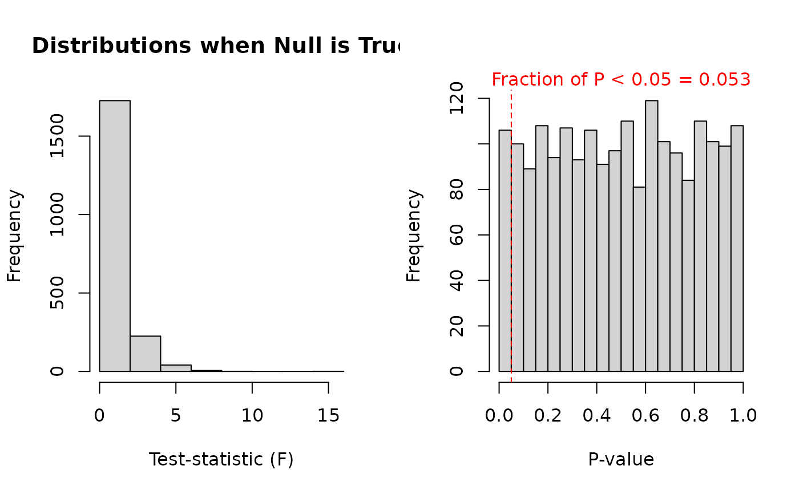
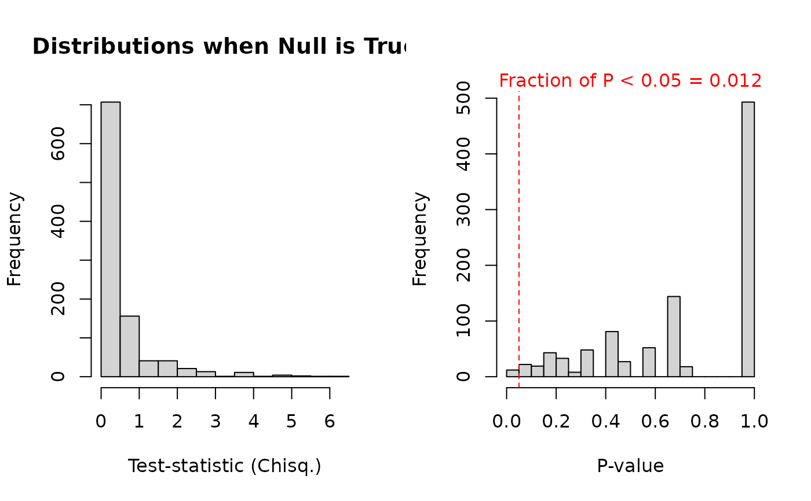
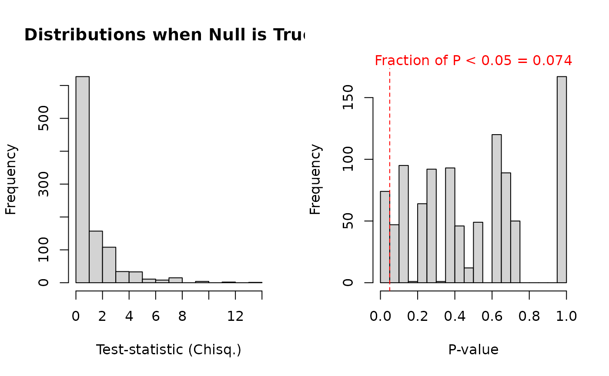

Assesses the False Positive Rate or fraction of p values below 0.05 by simulating p-values given that the null is true (no effect of "x" (usually treatment) specified in formula). Uses the sampling design (sample sizes per x-level) indicated by the supplied data. Simulation involves resampling of the vector of values in "y" with replacement. Outputs a histogram showing the null distribution of p-values and test-statistic.
Arguments
- formula
A one-factor formula with the dependent variable (y) on the left hand side, a tiddle (~), and then the independent variable (x), e.g. y ~ x.
- data
Relevant dataframe representing the sampling design (sample sizes in different x levels).
- model_or_test
A string specifying the model or test to check false positive rate for. Currently supports: "logistic", "chisq", "anova" (or the equivalent "lm").
- n_sim
Numeric describing the number of p-values to simulate.
- return_properties
TRUE/FALSE describing whether to return characteristics for each simulation. Intended use is for troubleshooting.
Value
A printout describing the false positive rate. A histogram of the relevant test-statistic and p-value under the null. If return_properties == TRUE, a list containing the vector of p-values, vector of test-statistics, and model object or others deemed important.
Examples
#Check to see if false positive rate is acceptable (0.05) for ANOVA on iris dataset:
data(iris)
fpr_check(Sepal.Length ~ Species, iris, "anova", n_sim = 2000)

#> [1] "Fraction of P < 0.05 = 0.053 (False Positive Rate given α = 0.05)"
#Now check to see fpr for a low count dataset:
test_df = data.frame(Trt.ID = rep(c("A", "B"), times = 20),
Pathology = c(rep(1, 34), rep(0, 6)))
table(test_df)
#> Pathology
#> Trt.ID 0 1
#> A 3 17
#> B 3 17
fpr_check(Pathology ~ Trt.ID, test_df, "chisq") |>
suppressWarnings() #Warning: Chisquare approximation may be incorrect

#> [1] "Fraction of P < 0.05 = 0.012 (False Positive Rate given α = 0.05)"
fpr_check(Pathology ~ Trt.ID, test_df, "logistic")

#> [1] "Fraction of P < 0.05 = 0.074 (False Positive Rate given α = 0.05)"